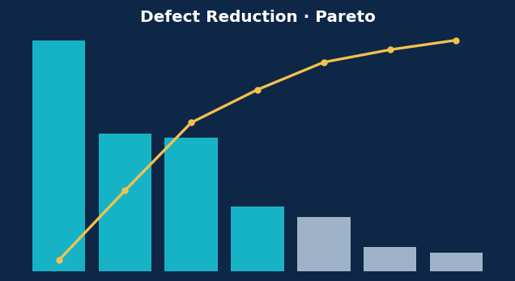
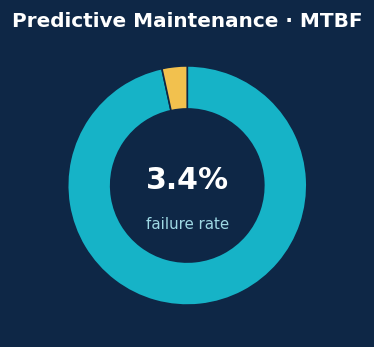
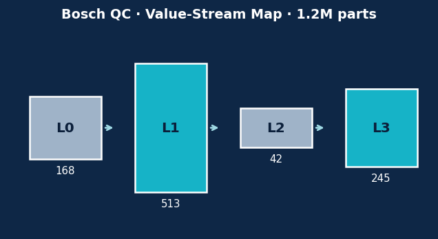
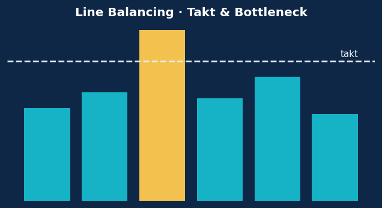

Lean & Six Sigma · DMAIC
Defect Reduction in a Steel Rolling Line
1,941 real plates: Pareto (3 of 7 defects = 75.5%), SPC/Cpk and a Random-Forest inspection-support classifier.
Open the case study →
TPM · Predictive Maintenance
Predictive Maintenance of a Milling Machine
10,000 cycles: Pareto of failure modes (82.6%), physics-based features and a failure model judged on recall — not accuracy.
Open the case study →
Six Sigma · VSM · Big Data
Quality Control on a Bosch Assembly Line
1.18M parts & 968 sensors (14 GB): value-stream mapping, big-data handling and rare-event defect prediction judged on MCC.
Open the case study →
Lean · Simulation · OR
Line Balancing of a Packaging Line
SimPy discrete-event model: bottleneck vs takt, line balancing, +31% throughput with the same work content.
Open the case study →